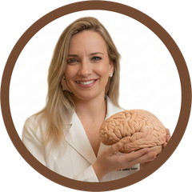
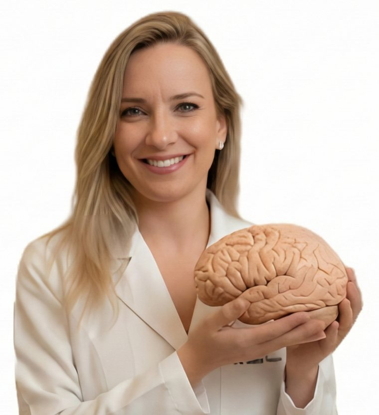

Segurança do paciente
Mapeamento preciso, parametrização correta e domínio das contraindicações e do manejo de efeitos adversos.
Formação em Neuromodulação · Rio de Janeiro
Estimulação Transcraniana por Corrente Contínua para profissionais e estudantes da área da saúde que desejam desenvolver competências na aplicação clínica da neuromodulação, com base teórica sólida e prática baseada em evidências.

Coordenação: Profª. Ma. Bianca FonsecaMais de 20 anos em neurodesenvolvimento
Por que esta formação
Aprofunde seus conhecimentos em Neurociência, Neuromodulação e tDCS em uma formação completa, que alia fundamentação teórica sólida a prática clínica rigorosa e baseada em evidências.
Mapeamento preciso, parametrização correta e domínio das contraindicações e do manejo de efeitos adversos.
Protocolos personalizados para condições neurológicas, psiquiátricas, fonoaudiológicas, de dor e do neurodesenvolvimento, inclusive com comorbidades.
Integração da tDCS ao treino cognitivo, à reabilitação motora, à fonoaudiologia e às terapias comportamentais.
Objetivos do curso
Objetivo geral
Capacitar profissionais da saúde e das neurociências a planejar, prescrever, aplicar e monitorar protocolos de Estimulação Transcraniana por Corrente Contínua (tDCS) com segurança, precisão neuroanatômica e embasamento em evidências científicas, abrangendo condições neurodesenvolvimentais, neurológicas, psiquiátricas, fonoaudiológicas e algológicas (tratamento da dor).
Objetivos específicos
Compreender os mecanismos neurofisiológicos, celulares e moleculares da neuromodulação por corrente contínua.
Dominar a localização topográfica de eletrodos com base no Sistema Internacional 10-20 de EEG e no neurorroteamento visual/funcional.
Identificar parâmetros de dosimetria: densidade de corrente, área do eletrodo, tempo, rampas e polaridade anódica/catódica.
Construir e personalizar protocolos terapêuticos específicos para quadros clínicos complexos e comorbidades.
Integrar a tDCS a intervenções multidisciplinares: treino cognitivo, reabilitação motora, fonoaudiologia e terapias comportamentais.
Manejar biossegurança, contraindicações, efeitos adversos e aspectos ético-regulatórios na prática clínica.
Conteúdo programático
Cada encontro combina teoria e prática. Os eixos abaixo resumem os principais temas trabalhados ao longo dos módulos.
São 12 encontros presenciais/síncronos de 4 horas, quinzenais, aos sábados, das 9h às 13h, ao longo de 6 meses, com início em 9 de janeiro de 2027, no Rio de Janeiro.
Estudo de artigos científicos de referência, nacionais e internacionais, para cada módulo.
Exercícios práticos e simulação de posicionamento de eletrodos pelo mapa 10‑20.
Análise e discussão de casos reais ou simulados em fóruns de discussão.
Protocolo clínico detalhado ou estudo de caso individual com revisão de literatura, apresentado ao final do semestre.
Público-alvo
Profissionais e estudantes da área da saúde e das neurociências que desejam ampliar seus conhecimentos e desenvolver competências na aplicação clínica da neuromodulação, em neurologia, psiquiatria, dor, fonoaudiologia e neurodesenvolvimento. A turma é multiprofissional, o que favorece a atuação integrada.
Pré-requisitos: [confirmar com a Profª. Bianca: formação exigida e documentação]. Cada conselho profissional tem normas próprias sobre o uso da tDCS; vale consultar as do seu.
Diferenciais
Além da tDCS isolada, você vê como integrá-la à fotobiomodulação transcraniana (tPBM) e à estimulação transcutânea do nervo vago (tVNS) em casos graves.
Protocolos pensados para pacientes com encefalopatia, risco de disautonomia (PSH) e alteração do nível de consciência.
Manuseio real dos equipamentos e mapeamento anatômico de precisão, com supervisão direta da docente.
Compromisso ético
Toda a formação é construída sobre critérios de segurança, avaliação individual e prática supervisionada.
Triagem de contraindicações absolutas e relativas antes de cada aplicação.
Parâmetros de estimulação dentro dos limites de segurança.
Prevenção de lesões de pele e manejo de efeitos adversos.
Protocolos individualizados, definidos a partir de avaliação clínica.
A tDCS como recurso complementar ao plano terapêutico, sem substituir a avaliação e a indicação de cada caso.

Coordenação
Psicóloga, psicanalista, psicopedagoga, psicomotricista e neuropsicopedagoga, com mais de 20 anos de experiência. Especialista em neurodesenvolvimento e neurofeedback, atua também com fotobiomodulação e com intervenções voltadas à aprendizagem, ao comportamento e às funções cognitivas.
[Formação e experiência específicas em neuromodulação e tDCS] · [Registro profissional]
Movimento Uniforme · Reeducação Cognitivo-motora e Neurorreabilitação
O que está incluso
48 h em encontros presenciais/síncronos e 112 h de atividades complementares.
Apostila impressa e digital, com bloco e caneta.
Solução fisiológica, esponjas, fita métrica, lápis dermográfico, gaze e álcool.
2 a 3 estimuladores de tDCS disponíveis nas aulas práticas.
Certificado de conclusão em papel especial, com selo.
Servido em todos os encontros.
Investimento
Inscrição individual em turma aberta ou uma turma fechada para a equipe da sua instituição.
[valor]por participante
Lote de lançamento: 15% de desconto na matrícula e inscrição até 09/12/2026
Sob proposta
Pré-inscrição
Preencha os dados e envie a mensagem pronta para a nossa equipe. Respondemos com datas, condições e o link de pagamento.
Dúvidas frequentes
Sim. As práticas exigem manuseio dos equipamentos, montagem de eletrodos e mapeamento com supervisão direta, por isso todos os encontros são presenciais, no Rio de Janeiro.
Não. A formação disponibiliza 2 a 3 estimuladores de tDCS e todos os insumos para as aulas práticas.
Sim. Ao concluir os encontros, as atividades complementares e o Trabalho de Conclusão de Curso, você recebe o certificado de 160 horas.
Não. A formação trata a tDCS como recurso complementar ao plano terapêutico, sempre a partir de avaliação clínica individual e sem promessa de resultado terapêutico.
É uma turma fechada para até 15 profissionais da sua instituição, realizada nas suas dependências, com o mesmo conteúdo, materiais e certificação. Envie uma pré-inscrição marcando "Turma in-company" para receber a proposta.
São 12 encontros quinzenais, aos sábados, das 9h às 13h, ao longo de 6 meses, com início em 9 de janeiro de 2027.
São atividades realizadas entre os encontros: leituras dirigidas e resenhas de artigos (30 h), oficina de montagem de protocolos e neurorroteamento (30 h), análise e discussão de estudos de caso clínico (20 h) e elaboração do Trabalho de Conclusão de Curso (32 h).
Consiste na elaboração de um protocolo clínico detalhado ou de um estudo de caso individual com revisão de literatura, apresentado ao final do semestre.
Sim. No lote de lançamento, matrícula e inscrição feitas até 09/12/2026 têm 15% de desconto.